SAGANO BLOG
- >
- SAGANO BLOG
- >
- 学校行事
2023年10月23日
第2学年研修旅行1
令和5年10月23日〜26日 北海道研修旅行
天候にも恵まれ、全クラス無事に京都駅を出発しました。
名古屋、神戸、伊丹の3つの空港から北海道新千歳空港を目指します。
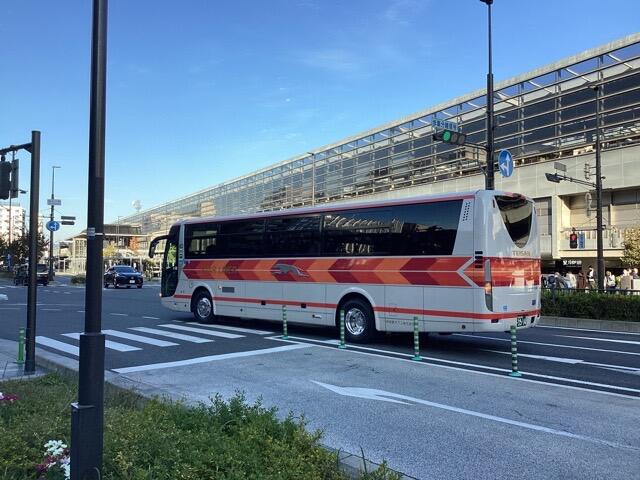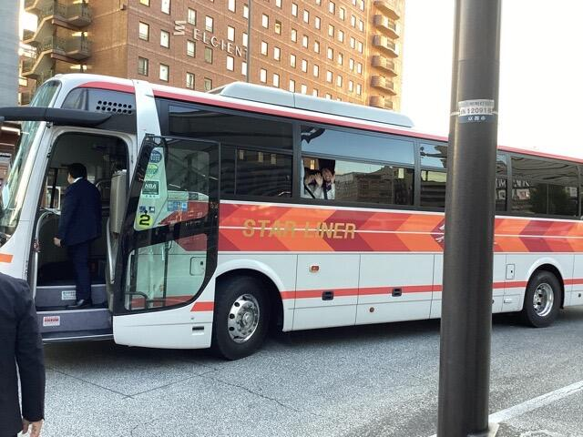
今日の予定は、北海道到着後、クラス別研修として、クラスごとに別々場所で研修します。
その後、ホテルを目指します。
2023年10月19日
10月19日に第２学年で研修旅行結団式を行いました。
10月23日～26日にかけて研修旅行で北海道に向かいます。それに向けて、マナーやルールなどの心構えを確認しました。
安心安全を大切に、たくさんの思い出が作れる、有意義なものにしたいと思っています。
2023年10月02日
９月1６・１７日に本校にて進学説明会を開催しました。
当日は残暑が厳しい中、たくさんの中学生とその保護者の方々に来校していただきました。誠にありがとうございました。
全体会では校長先生からのあいさつ、在校生によるラボや学校生活についてのプレゼンテーション、学科長からの教育内容説明、選抜についての教科ガイダンスを行いました。その後、施設見学と個別相談等も行いました。
全体会の様子
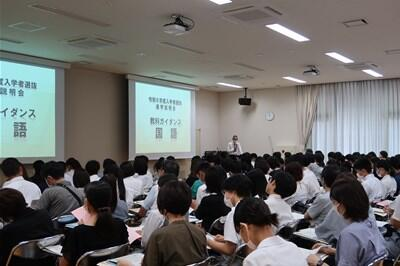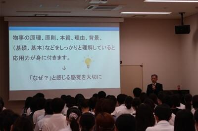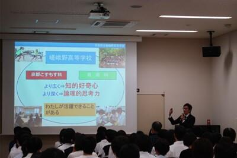


全体会後の様子
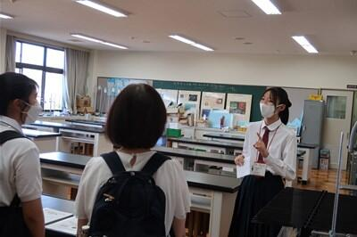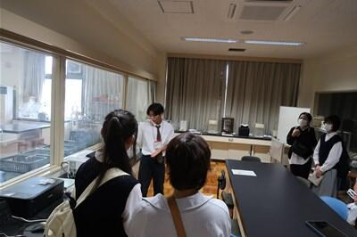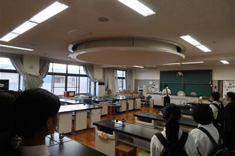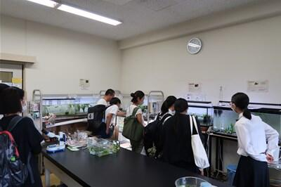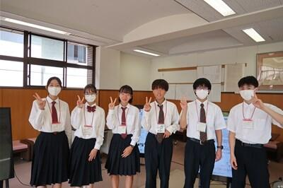 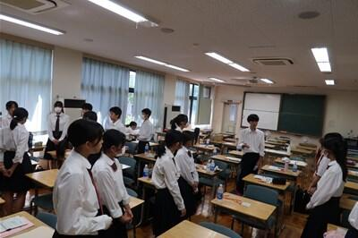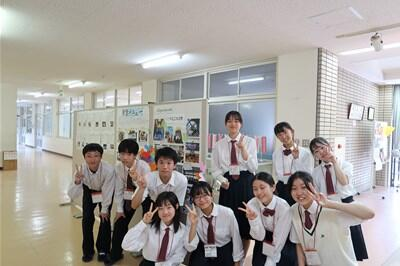
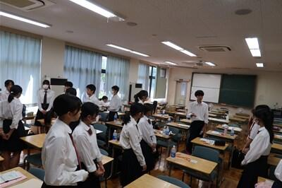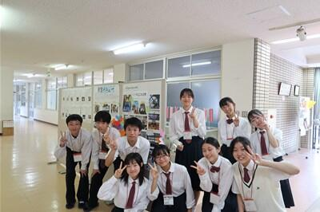
説明会前日の放課後、広報委員の企画係が集まり、展示等の準備を行いました。
来校される中学生のために、様々な企画を広報委員会で提案し、実現することができました。今回は、約３０ある部活動の紹介チラシを作成し、掲示しました。そして、学校の魅力や受検のアドバイス、在校生の平日スケージュールを掲載したチラシを作成し、配布しました。
 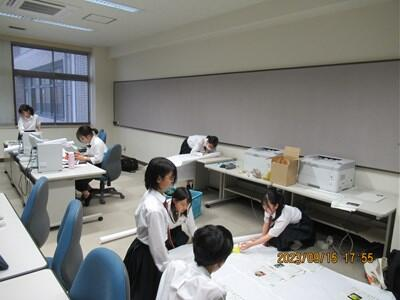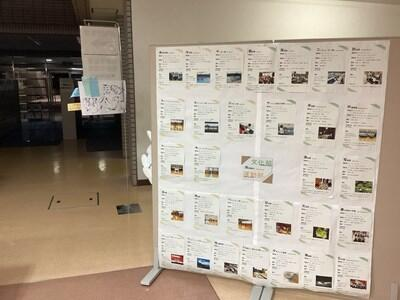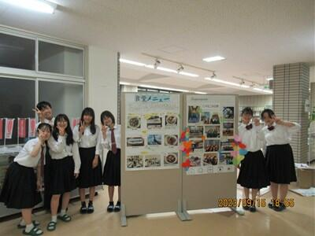
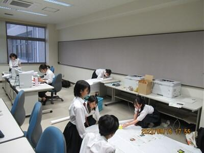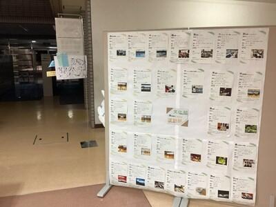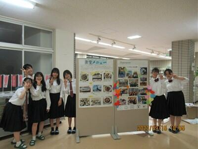
次回は10月21日に開催予定です。
2023年09月27日

9月22日（金）に体育祭を実施しました。本来であれば前日21日に実施予定でしたが、悪天候が予想されるため1日順延して行いました。
今年度は4年ぶりに制限のない開催となり、生徒も教職員も楽しみにしていました。生徒の願いが天に届いたのか、当日は、清々しい気候で絶好の体育祭日和でした。
今年度はグランドに全学年、教職員が一堂に集まっての開催。ローハイドや棒取り、綱引きといった種目や、各クラスの学級旗も復活し、競技はもちろん、応援にも力が入ります。声がかれるほどに熱心にクラスの仲間や同じ団の選手を応援し、歓声があがる光景や、はじけるような笑顔で楽しむ生徒の姿には、感慨深いものがありました。
この日のために春から準備を進めてくれていた体育委員の皆さん、準備・後片付けや各種目の補助をしてくれたクラブ員・保健美化委員の皆さん、放送や実況で体育祭を盛り上げてくれた放送部の皆さんのおかげで大盛り上がりを見せた体育祭でした。ありがとうございました。
2023年09月14日


9月８日、２年生のアカデミックラボの時間に、文化・デザインラボで建築やデザインをテーマに探究する生徒を対象に、３Dプリンター講習会を実施しました。
今回、公教育の探究活動を支援するソーシャル企業として活動する、本校卒業生で一般社団法人e-donuts代表理事の方にコーディネートしていただき、株式会社Monozukuri Venturesから講師の方をお招きし、デザインについてや、プロダクトや建築といった立体構造の捉え方（プロダクトデザインスケッチ）、CADソフトウェアの使い方をレクチャーしていただきました。
生徒達は慣れないソフトの使用に最初こそ苦戦していましたが、20分ほどするとすぐに使いこなし、与えられた課題をアレンジして制作するなど夢中で取り組んでいました。
完成したデータは、本校が所有する３Dプリンターで実際に出力してみました。
この講習会で「なんとなく難しそう」と感じていた３Dプリンターが自分たちでも使用できるということを知り、今後デザインしたものを試作するにあたり３Dプリンターで試作を重ねることができる選択肢が広がったように思います。
2023年09月06日


嵯峨野高校のとこのは祭（文化の部）では、1年生は20分の演劇、2年生は40分の演劇、3年生は15分のパフォーマンスをクラスで発表します。
それぞれのクラスの個性が溢れ、工夫の凝らした発表でした。皆で協力し創り上げた演劇やパフォーマンスを通して、仲間との絆が一層深まったようです。
文化系クラブも、体育館やコモンホール、各フロアー特別教室などで日頃の練習の成果発表をしました。部員たちの日常生活では見せない一面が見られるので、どのクラブの発表も大盛況でした！
また、生徒会企画もお笑いトークショーやのど自慢、大喜利大会など大いに盛り上がりました。生徒はもちろん、教員も存分に楽しみ、充実した2日間でした。
2023年09月06日


9月5日6日の2日間、とこのは祭（文化の部）が始まっています。今年は制限のない開催ということで、クラスの発表のほか、各クラブ・委員会の展示や発表も盛り上がっています。校内にはクラスTシャツを着た生徒が自由に会場間を行き来し、文化祭の非日常感を楽しんでいるようです。
保護者の方にも、暑い中多数ご来場いただいています。
まずはクラブ・委員会の展示の様子を御覧ください。
2023年09月01日
.jpg "体育館リハーサルではクラス一丸となって取り組んでいます。")
.jpg "音響や照明も生徒達自身で行います。")
.jpg "日に日に増える大道具。")
.jpg "校内のあちこちでダンスや劇、パフォーマンス練習をしています。")
9月5日6日に開催される「とこのは祭文化の部」に向け、今週火曜日から本格的にクラスの文化祭活動が始まっています。
今年度は4年ぶりにコロナ前の実施形態に戻した文化祭・体育祭を行います。昨年度まではなかった取組が増え、生徒達は思い切り活動しているようです。
3年生もこの期間、この時間だけは受験勉強を忘れ、活動を楽しんでいます。残暑厳しい日々ですが、熱中症対策をしっかりとりながら、各クラスの個性を舞台発表で存分に表現して欲しいと思います。
2023年08月29日
.jpg)
８月２８日に始業式を行いました。酷暑のためYouTube配信で行いました。今回も放送部の皆さんが協力してくれました。いつもありがとうございます！
はじめに着任式を行い、ケネディ・サイモン先生、バータラグ・ジョシュア先生の２名のAETの先生の紹介がありました。
始業式での校長式辞では、厳しい猛暑の中はじまる２学期に向けて、生徒達に熱中症対策、体調管理を徹底して欲しい、長期休暇明けは不安やしんどさを感じやすい時期でもあるので、遠慮なく相談して欲しいとの言葉掛けがはじめにありました。
学校生活については、２学期は１年間の中間にあたる時期であるので、後半に向けてこの中間部分をどう過ごすかが大切。努力するプロセスに自信を持てる行動をして欲しいとエールを送られました。 最後に、来週から始まるとこのは祭に向けた活動において、主体性を持って行動し、精一杯やり切った発表を見せてほしいと期待を込めた言葉がありました。
生徒指導部長講話では、２学期が始まるにあたり「安心・安全の両立」を目指した活動や生活を実現するため、嵯峨野生に心掛けてほしいことを５つ話されました。
１つ目は、登下校時の自転車運転でのイヤホンの使用、並走、ヘルメットの着用、歩きながらのスマホ操作について今一度見直してほしいということ。
２つ目は、闇バイトや違法薬物などがインターネットにより若年層に広まっていること受け、そういったことに絶対に関わらないこと。
３つ目は、どんなことでも１人で悩まないこと。家族や友人、先生に話して一人で抱え込まないこと。
４つ目は、学校のルールを守ること。特にスマホやタブレットの使用について考えてほしい。
５つ目は、挨拶・御礼を掛け合い、コミュニケーションをとっていこうということ。
これらをチーム嵯峨野として、１人１人が心掛けみんなが安全・安心と感じる学校にしていきましょう。
明日からは本格的に文化祭活動が始まります。 校長先生、生徒指導部長のお話を頭に入れて楽しみながら悔いのない活動にして欲しいと思います。
2023年07月31日
本年のサマーセミナー「地理地学巡検」を７月28日（金）に実施ました。大型バスに乗り、近畿地方北部の地理や地学に関わる巡検ポイントを見て回りました。

まず向かったのが、地理の聖地「百瀬川扇状地」です。地理の教科書や資料集に必ずと言っていいほど登場する百瀬川扇状地ですが、京都に近いにもかかわらず、実際に現地へ行く機会はほとんどありません。今回の巡検は実際に教科書に登場する場所を確認できるよい機会です。
現地に到着するまでにバス内で、近畿地方北部の断層運動について、教員からレクチャーがあった後、バスは「近江中庄」駅に到着しました。所謂「扇端」にあたるこのあたりには、湧水地があるはずです。少しうろうろと歩き湧水地を探しあて、その水に実際に触れてみました。暑い日でしたのでその水の冷たさが印象に残りました。次に教科書にも登場する百瀬川の「天井川」の百瀬川隧道を見に行きましたが、昨年からの工事で天井川下のトンネルがついに撤去されていました。撤去された後の天井川の断面がきれいに見えました。


扇端の湧水地を確認
天井川の断面がきれいに見えました
百瀬川扇状地を見学後、福井県に入りました。事前にバス内では、Ｃ１４年代測定法やＯ１８・花粉分析などによる古気候の復元、ミランコビッチサイクルやダンスガードオシュガーサイクルなどについて、自然地理を専門とする教員からレクチャーがありました。年縞博物館では館内の方から丁寧な説明がありました。７万年もの間、１年の欠けもなく堆積し続け、奇跡的に現在まで残った縞模様である「年縞」の本物を目の前にしながら、生徒たちは熱心に聞き入っていました。偶然の発見から世界標準になるまでの話は本当に聞き応えがありました。

年縞博物館内で説明を聞く（年縞博物館の許可を得て掲載しています）
昼食後、大島半島のモホ面露頭に向かいました。大島半島は、海洋プレートが陸上に露出した複合岩体である「夜久野オフィオライト」の中で海洋性地殻と地球内部のマントルの両方の部分が見られる珍しい場所で、日本で唯一モホ面の露頭がみられる場所です。私たちはトンネルを抜けた左カーブでバスを降り、モホ面の露頭を観察しました。かんらん岩とはんれい岩の両方が確認できました。大切な露頭です。露頭には触れないようこころがけました。

露頭の前でオフィオライトの説明を聞く
露頭に近づき、観察する
この日の巡検の最後は、バスで五老ヶ岳に登り、逆Ｙ字型をした舞鶴湾を一望しました。城下町として発展した西舞鶴と軍港として発展した東舞鶴の違いが確認できました。
舞鶴湾口を望む
溺れ谷地形が天然の良港になっている様子を確認する
2023年07月28日
７月28日（金）の午前に本校１・２年生を対象として、情報科のサマーセミナー「ホームページ作成セミナー」を実施しました。
このセミナーでは、ホームページを作成するための言語である「HTML」やホームページの見栄えをよくする「スタイルシート」について学習しました。
難しい内容もありましたが、生徒たちはセミナー中はもちろんのこと、セミナー終了後も教員に質問をするなど大変熱心に取り組んでくれました。このセミナーを通してホームページの作成など情報の分野に興味を持ってくれれば嬉しく思います。

2023年07月13日
7月8日(土)サマーセミナーの1つであるEnglish Immersion Day が開催されました。1年生17名が参加し、朝8時30分から夕方まで英語漬けの一日を過ごしました。 English
午前中は３人ずつのグループに分かれ、府立高校のALT6名からのSpecial Lectureがありました。小グループに分かれたことで個々が英語を使用する場面が存分にあり、充実した時間を過ごすことができました。
午後からはImprov Live Performance (即興演技)に挑戦しました。与えられたtopicに対して即興で対応するという難易度の高い活動の中で、予想外の展開に何度も笑いが起こり和気藹々とした雰囲気で最後を締めくくりました。
使用言語は英語のみということで、最初は緊張した面持ちの生徒たちでしたが、ALTらの励ましを受けながら前向きに活動に取り組み、最後には満足した表情で1日を終えることができました。生徒たちにとって忘れられない日となったことと思います。


英語版記事はこちら
2023年07月13日
On Saturday, July 8th we held our annual Sagano Immersion Day for Summer Seminar. 17 first-year students took this opportunity to come close to natural, everyday English! Led by the AETs at Sagano High School, we were joined by four AETs from other high schools around Kyoto to enjoy a day filled with experiences using English throughout the day.
In the first half of the day, participating students enjoyed a variety of activities and lessons centered around English language or cultural experiences. It was packed full of fun and engaging activities which gave the students at Sagano a chance to really flex their English skills. They all worked hard to think critically and speak extemporaneously, and enjoyed meeting our guests from America and Canada.
In the afternoon, they practiced and performed improvisation activities to boost their extemporaneous production skills while enjoying cooperative performance activities with their friends. We are grateful for the AETs who joined us, and thankful for an enjoyable day using English!

2023年07月10日
7月7日(金)２・３年生アカデミックラボ交流会が実施されました。２年生が自分たちの探究テーマや探究活動における悩みについて３年生に相談し、先輩たちは自身の経験をふりかえりながら、苦労した点や教訓などを後輩たちに伝えました。

先輩が昨年度取り組んだ探究テーマを引き継いだグループもあり、この機会に多くの質問を投げかけながら、具体的な探究活動のイメージをひろげることができました。


先日、探究成果発表会（SSGF）を終えたばかりの3年生から実感のこもった話を聞き、2年生は今後待ち受ける試練にプレッシャーを感じるとともに、自分たちの活動へのモチベーションを高めている様子でした。
2023年05月30日
５月２６日（金）３限目に本校コモンホールにて１年生に向けて「歯科講話」を実施しました。講師は、本校の学校歯科医である米沢武先生に来て頂きました。演題は「よく噛んで歯を大切に」です。
内容は、①「食べる」ということ、②生活習慣、③歯周病についてでした。五感で感じながらよく噛んで食べること、生活習慣とくに姿勢など体の歪みに気を付けること、そして歯周病に気を付けることの大切さを実感しました。約３０分の講演で貴重なお話を聞くことができたと思います。
また、この日の司会と書記を、１年生の保健美化委員の生徒が担当しました。
皆さん、歯を大切にして健康で充実した生活を送りましょう。
2023年05月02日
4月21日（金）、春の陽気が心地よい日に、3年生は野外活動として神戸散策を行いました。歴史と文化が豊かな都市である神戸を肌で感じることができました。集合場所であるメリケンパークの目の前に広がる海も気持ちのよいものでした。
グループ活動も充実していました。計画に従って、クラスメイトと博物館や歴史的建造物などを巡りました。神戸ならではのグルメも楽しんでいました。
野外活動を通して、クラスメイトとの交流が深まり、有意義な時間を過ごすことができました。
以下、生徒たちが散策中にグループで撮影し、Googleクラスルームを通じて提出した写真です。春の神戸の雰囲気を味わえる素敵な写真をご覧ください。


{kind=link}
{kind=link}
{kind=link}
{kind=link}
{kind=link}
{kind=link}
{kind=link}
{kind=link}
{kind=link}
{kind=link}
{kind=link}
{kind=link}
{kind=link}
{kind=link}
{kind=link}
{kind=link}
{kind=link}
{kind=link}
{kind=link}
{kind=link}
{kind=link}
{kind=link}
{kind=link}
{kind=link}
{kind=link}
{kind=link}
{kind=link}
{kind=link}
{kind=link}
{kind=link}
{kind=link}
{kind=link}
{kind=link}
{kind=link}
{kind=link}
{kind=link}
{kind=link}
{kind=link}
2023年04月25日
4月25日(火)６・７限、１年生を対象とするデジタルシティズンシップ講演会を、一般社団法人メディア教育研究室代表理事で、日本デジタル・シティズンシップ教育研究会副代表理事でもあり、国際大学グローバル・コミュニケーション・センター客員研究員でもある今度珠美先生を講師としてお招きして、実施しました。６限は５～８組、７限は１～４組の生徒が参加しました。
講演会ではありますが、自分の考えを深めたり、周りの友達と意見を交流したりする場面が随所に設定され、自分ならどうするか、どのように行動するべきか、ということを常に問いかけられながら、メディアとの付き合い方を考え直し、学ぶ機会となりました。
{kind=link}
{kind=link}
{kind=link}
{kind=link}
{kind=link}
{kind=link}
深めた考えを自分なりの言葉で語る生徒、語られる言葉に耳を傾けながら自分の考えを磨く生徒、それぞれの生徒にとって有意義な時間となりました。
bystander「傍観者」ではなく、upstander「誰かを支えるために立ち上がる人」であることの大切さに気づき、匿名性という特徴ゆえに傍観者が生まれやすいインターネット空間でも、upstanderとして行動できる人間になってくれることを期待します。
2023年4月25日
〒616-8226
京都市右京区常盤段ノ上町15番地
TEL 075-871-0723 FAX 075-871-0724
E-mail [email protected]
Copyright (C) 京都府立嵯峨野高等学校 All Rights Reserved.